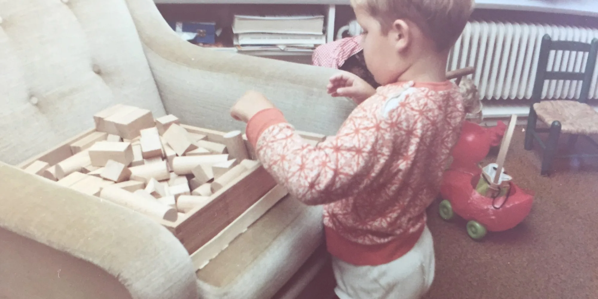
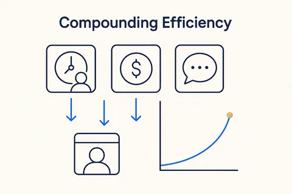

Components and building blocks
Reusable screens, lists, filters and cockpits, so a new app is configuration plus one small piece of code, not a new project. 5 concepts; each opens its full page in its own library.

 Play with the BlocksLike Lego — snap, try, rebuild. Tinker in your own life to learn what's possible.Structure Beats Magic →
Play with the BlocksLike Lego — snap, try, rebuild. Tinker in your own life to learn what's possible.Structure Beats Magic → Decompose and ComposeBreak the complex whole into small, self-contained parts you can name, model and check one at a time — the core move of thinking in structures.Breakthrough Modeling →
Decompose and ComposeBreak the complex whole into small, self-contained parts you can name, model and check one at a time — the core move of thinking in structures.Breakthrough Modeling → Reusable SkillsReusable, AI-readable units of behavior — a skill packages how to do one thing well, versioned and callable, so people and AI apply it the same way every time.Breakthrough Modeling →
Reusable SkillsReusable, AI-readable units of behavior — a skill packages how to do one thing well, versioned and callable, so people and AI apply it the same way every time.Breakthrough Modeling →
Compounding EfficiencySpend time, money and attention where they compound — cut the meetings, the licensed bloat and the unstructured chat that add nothing, and put the resource into structure that pays back.Breakthrough Modeling → Own the Layer or Rent the FeatureEvery knowledge product answers two questions: who maintains it, and is it a layer of its own or a feature of something else. The answers decide what you can build on.Structure Beats Magic →
Own the Layer or Rent the FeatureEvery knowledge product answers two questions: who maintains it, and is it a layer of its own or a feature of something else. The answers decide what you can build on.Structure Beats Magic →Everything on this topic → (use cases, articles, resources)
Other categories: Design thinking and small experiments · From proof of concept to something you rely on · Vibe coding practices that hold · Data, rules and structure first · Build, buy or rent · Privacy and control · Building your own data models · The business OS